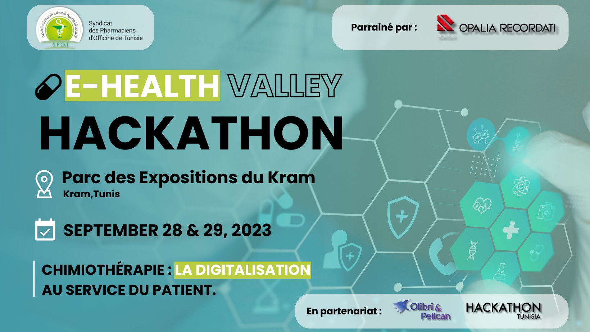

About Hackathon Tunisia
At Hackathon Tunisia, we offer comprehensive event planning, tech ecosystem engagement, and tailored solutions for hackathons.
Hackathon Event Planning
We offer comprehensive event planning services for hackathons of all scales. From conceptualization to execution, our team ensures a seamless event that fosters innovation and collaboration. Our services include ideation, venue selection, participant recruitment, judging, and prize coordination. We'll handle all the logistics, allowing you to focus on your hackathon's goals and vision.
Technology Ecosystem Engagement
Hackathon Tunisia connects your organization with a thriving technology ecosystem. We facilitate partnerships with hackers, tech companies, mentors, and experts to enhance your hackathon's success. We'll help you leverage industry relationships, providing opportunities for sponsorships, technology stacks, and mentorship programs. Maximize your event's impact by tapping into our vast network.
Customized event Solutions
We offer comprehensive event planning services for events of all scales. From conceptualization to execution, our team ensures a seamless event that fosters innovation and collaboration. Our services include ideation, venue selection, participant recruitment, judging, and prize coordination. We'll handle all the logistics, allowing you to focus on your hackathon's goals and vision.
What we did so far
We have successfully organized numerous hackathons, bringing together innovators, tech enthusiasts, and industry leaders to collaborate, create, and drive innovation in the dynamic world of technology.

Education
Organizations


Business
Organizations

Partners
The E-Health Valley Hackathon
Chimiothérapie: the digitalization of the patient's service
Overview
In our journey so far, we've proudly organized the EHealth Valley Hackathon Chimiothérapie, an event dedicated to driving innovation in patient services for chemotherapy. This innovative event brought together a community of innovators, healthcare professionals, and technology enthusiasts to explore the potential of digital solutions in transforming the patient experience during chemotherapy. Our past event featured exciting challenges, valuable mentorship, and recognition for outstanding contributions. We firmly believe in the power of innovation and collaboration to enhance patient care, and our past event was a significant step toward realizing this vision. We're excited to continue our journey, bringing more events and initiatives to improve patient services in healthcare. Stay tuned for more exciting developments from EHealth Valley!
Offer
Minimal Valuable Product
Topic
EHealth, Chemotherapy
Date
28,29 September 2023
Powered by
Opalia Recordati
Number of participants
60
Prices
6000 TND
The Space Tech Hackathon
Empowering Tunisia Through Space Innovation
Overview
In our journey so far, we've proudly organized the EHealth Valley Hackathon Chimiothérapie, an event dedicated to driving innovation in patient services for chemotherapy. This innovative event brought together a community of innovators, healthcare professionals, and technology enthusiasts to explore the potential of digital solutions in transforming the patient experience during chemotherapy. Our past event featured exciting challenges, valuable mentorship, and recognition for outstanding contributions. We firmly believe in the power of innovation and collaboration to enhance patient care, and our past event was a significant step toward realizing this vision. We're excited to continue our journey, bringing more events and initiatives to improve patient services in healthcare. Stay tuned for more exciting developments from EHealth Valley!
Offer
Minimal Valuable Product
Topic
EHealth, Chemotherapy
Date
28,29 September 2023
Powered by
Opalia Recordati
Number of participants
60
Prices
6000 TND
The Metaverse Hackathon
Unleash the potential of metaverse for a better digital culture economy in Tunisia.
Overview
In our journey so far, we've proudly organized the EHealth Valley Hackathon Chimiothérapie, an event dedicated to driving innovation in patient services for chemotherapy. This innovative event brought together a community of innovators, healthcare professionals, and technology enthusiasts to explore the potential of digital solutions in transforming the patient experience during chemotherapy. Our past event featured exciting challenges, valuable mentorship, and recognition for outstanding contributions. We firmly believe in the power of innovation and collaboration to enhance patient care, and our past event was a significant step toward realizing this vision. We're excited to continue our journey, bringing more events and initiatives to improve patient services in healthcare. Stay tuned for more exciting developments from EHealth Valley!
Offer
Minimal Valuable Product
Topic
EHealth, Chemotherapy
Date
28,29 September 2023
Powered by
Opalia Recordati
Number of participants
60
Prices
6000 TND
Stakeholder involvement
Hackathons commonly focus on a specific theme [] or take place in a specific domain. It thus appears reasonable to include stakeholders related to this theme or domain to participate in the organization, execution and follow-up of a hackathon. They can provide valuable input, help set the stage of an event, make it more engaging and fun for participants and support the sustainability of hackathon outcomes []. Deciding about how and when to involve stakeholders in the planning and execution of a hackathon is thus a crucial decision that organizers have to take because it will fundamentally shape the experience of participants during the hackathon.
When?
Organizers should think about which stakeholders to involve early in the planning process because their input might have a considerable impact on the design of the event itself. The way each stakeholder participates in the planning, execution and follow-up of a hackathon is then subject to individual planning and can potentially happen later in the planning process. Stakeholders and their role in relation to the hackathon should however be decided upon and announced prior to the start of the hackathon to be able to include them in information material.
Who?
While conducting a traditional stakeholder analysis [] might be too time-consuming, organizers certainly should think about who might be interested in or affected by the outcomes of the hackathon they plan to organize. Depending on the theme of the event organizers might want to involve university departments (e.g. for a collegiate event []); investors, incubators, and customers (e.g. for an entrepreneurial event []); managers and executives (e.g. for a corporate event []); volunteers and activists (e.g. for a civic event []); scientists and technical experts (e.g. for a scientific event []). These are just a few examples for potential stakeholders. The decision for whom to involve and how to involve them ultimately lies in the hands of the organizers.
How?
Much like the decision for which stakeholders to involve, the decision for how to involve them allows many options. In the following we will outline common examples for stakeholder involvement. These should however not be perceived as exhaustive. Organizers should discuss options with stakeholders and decide for a model that fits their particular event.
One common way of involving stakeholders in a hackathon is as sponsors. This can include them providing resources in exchange for being mentioned on the hackathon website, in handouts or on posters at the hackathon site or them providing specialized equipment or sponsoring awards or specific activities during a hackathon. The website of Major League Hacking provides a good overview on how to attract sponsors including different sponsorship options []. The advantage of this approach is that the outline and organization of a hackathon remains solely in the hands of the organizers while sponsors provide additional resources for the hackathon to take place.
Another common way of stakeholder involvement is to invite them as speakers. Similarly, stakeholders can also hold training sessions during an event e.g. related to specific technologies they are familiar with and that participants might use for their projects. Both approaches allow stakeholders to be present during an event and provide useful context and input for participants that they can utilize when planning and working on their projects. Moreover, it leaves the option for participants to decide whether to use the input for their projects or not.
Another common way of involving stakeholders in a hackathon is for them to serve as mentors [] or jurors. Serving as mentors -- in comparison to the aforementioned role as speakers or trainers -- allows stakeholders to directly work with participants, provide targeted feedback and steer them into a specific direction [] and foster learning []. Utilizing stakeholders as jurors can also be beneficial because they can provide realistic project assessments based on their area of expertise and again provide useful feedback to participants when discussing their verdict.
In addition to serving in the aforementioned roles, stakeholders can also provide access to additional resources in the form of datasets, documentation and access to interested parties such as potential future customers or domain experts []. This requires them to be accessible during the hackathon but it allows participants to seek input and advice on demand.
For some hackathons it might also be feasible for stakeholders to propose specific challenges for the participants to address []. We observed this model mainly in scientific hackathons where scientists proposed project areas or challenges that were related to their area of expertise or that would help them in their work. Participants can then choose which challenge or project to address and how to address it.
Finally, stakeholders can of course also attend an event as participants or serve as co-organizers. This is particularly common for corporate hackathons where organizers and participants often are employees of the same company that organizes the event []. Involving stakeholders as participants can however be difficult especially in an open event that welcomes individuals from various domains and backgrounds since stakeholders might be inclined to take over projects and adjust them to fit their ideas or goals.
Tradeoffs
- Depth of stakeholder involvement: The main difference between the aforementioned models of stakeholder participation is how much they can influence what happens during a hackathon. In some cases, it might be useful for stakeholders to be deeply embedded e.g. when a hackathon aims to solve specific issues within a certain domain such as the development of software artifacts that fit within an existing ecosystem. This might however limit interest by projected participants thus making it hard to attract and retain participants during a hackathon. Balancing these two sides can be difficult for organizers. One way of addressing this tradeoff is for organizers to allow stakeholders to provide input but limit their interaction with and active participation in participants projects.
- Open project selection vs selection among proposed challenges: Most hackathons allow participants to work on any project they want. This approach can foster creativity and interest because it allows participants to work on any theme they are passionate about. It will however likely also lead to participants working on projects that might or might not be related to the goals [] organizers had when organizing their event or projects that might not be useful for the domain the hackathon was organized in. Providing specific challenges ensures that participants work on projects that are relevant to individuals outside the context of the hackathon thus increasing the probability of projects to live on after the hackathon has ended []. It does however limit choice for participants and thus might lead to limited interest and frustration. One way to address this tradeoff is for organizers to propose larger topic areas of themes that guide participants to a specific direction but allow for them to develop their own idea related to this direction.
Further readings
Participant recruitment
Participant recruitment is one of the most crucial elements of hackathon design. After defining goals [] and themes [] for the hackathon, organizers should ask themselves: Who would be the target audience for an event? When should they start recruitment? How to draw interest and attention to an event? We will provide suggestions for those in the following.

Hack For Democracy
Organizers might want to run a hackathon related to a specific theme [], in a specific domain or utilize specific software and hardware during their event that are not commonly available to participants. Such events thus potentially require the organizers to provide trainings, access to licenses or hardware for participants to be able to work on projects during this hackathon.
When?
Preparation activities can be done remotely, onsite, or both. If the theme [] and goals [] will likely require specialized technical knowledge (e.g. particular tools, languages, or frameworks) or domain knowledge (e.g. community needs, or a scientific field) it is important to develop ways to bring participants up to speed before (usually 1 to 3 weeks) or very early during the event. The organizers may also want to facilitate team meetings if teams are formed in advance [] so that they could discuss project scope and plan, assign tasks, and experiment with technologies to be used during the hackathon. Assuming participants have free time and sufficient motivation, this can help the work move along more quickly when the hackathon begins.
Who?
The organizers should work with mentors [,] to coordinate training programs. Mentors will in fact often be running those programs, since they are typically chosen based on their expertise. For hackathons when team formation [] occurs in advance, it is advisable that the team leaders are chosen, so they can organize team meetings. Organizers can also encourage projected participants to prepare for the hackathon by e.g. setting up a code base in advance [] or study technologies that they might want to use for their project.
How?
The organizers first need to identify what technologies and topics are necessary for people to participate in their event and to what extent participants should know about them before coming to the event. One common way to help achieve this is for organizers to arrange training programs in which participants are taught specific technologies or domain knowledge that they would need to use at the event. These programs can consist of webinars developed by the organizers, or pointers to existing resources that are available, e.g. on Youtube, or the Coding Academy website [] and that projected participants can use to prepare themselves [].
The organizers should ensure that the tutorial materials are accessible to all participants. This typically includes posting them on the hackathon website, the collaboration platform through which the hackathon is organized, e.g. GitHub, or other document sharing tools, e.g. GoogleDrive.
Tutorials are often delivered as pre-recorded videos with interactive Q&A at scheduled times. If the training, for example, is related to the configuration of the development environment, participants can watch a pre-recorded video, replicate the steps shown in the video, and communicate with trainers during the Q&A session and/or via emails. Alternatively, tutorials can be delivered live by a mentor [,] which guides a group of participants through activities interactively. For groups of larger size, it might be advisable to form smaller subgroups of perhaps 5 to 10 participants, each guided by one mentor. In practice, live tutorials can present a scheduling challenge, as it might not always be possible to find a common time for all participants particularly when they are geographically distributed. Moreover, tutorials may also need to be customized based on the participants’ skill levels, e.g. novices need foundational knowledge first before learning advanced skills while experienced participants might want to skip such basics []. In such situations, it is advisable that organizers cluster participants into groups of similar skills and provide appropriate materials for each group. The World of Code (WoC) hackathon [] is an example where mentors trained participants in small group tutorials in real-time a few days before the event via Skype.
For hackathons that wish to train participants onsite, we have observed two approaches that can be effective. The first approach is train to hack as done by Astro Hack Week [] and Geo Hack Week []. In this approach, participants spend most of their time hacking, while also spending a considerable amount of time (e.g. 25-50%) on training of particular skills and domain knowledge required to conduct research work afterwards. The second approach is participants alternating between hacking and training. An example of the second approach is high performance computing (HPC) hackathons which run in parallel with the super computing conference [] where participants distribute their time between hacking and attending conference sessions. BrainHack 2018 of the Organization for Human Brain Mapping (OHBM) in Singapore [] is another example that allows participants to swap between hacking and attending training sessions during a concurrent track.
In case the hackathon involves specialized hardware, the organizers might want to ensure that it arrives at the hackathon site early so that it can be set up before the participants arrived. Moreover, organizers might want to ensure that a specialist is on-site during the entire event that can help with technical issues.
Tradeoffs
- Pre-recorded videos vs real-time training: Pre-recorded training videos resemble a traditional mode of instruction that offers limited interaction between the participants and trainers. While questions can be addressed in a live session after the training, spontaneous adaptation of the training to attain better learning outcomes is not easily achievable. Adaptation and customization are possible in real-time interactive training, as human trainers are aware of the difficulties that participants are experiencing and can quickly act to mitigate such difficulties. The latter however is not always feasible for larger groups.
- Training before vs training at the hackathon: Pre-event training permits more hack time as opposed to onsite training which requires participants to split their time between hacking and training. Pre-event training, however, demands participants’ willingness to spend some time for training before the event, and that delivered in real-time settings demands both trainers and participants are concurrently presented which can present scheduling problems.
Further readings
Duration / breaks
When organizing a hackathon, organizers have to decide when to start, when to end and when to take breaks in between. These decisions are crucial because they can influence who would be motivated to come, whether attendees can maintain a high level of motivation, how the event will be perceived and how participants engage with each other beyond working on their projects.
When?
The overall timeline of a hackathon needs to be decided on and announced early during the planning process since it serves as a basis for recruitment material [] and for peoples’ decision to attend the event. The overall timeline should include dates and times (including start, end and potential overnight breaks) for each day. Other breaks during the hackathon can potentially be decided on and announced later.
Who?
The decision for when a hackathon will take place, how long and it should be and how many breaks it will have is commonly taken by the organizers. For this decision they can consult projected participants [], mentors [] and other stakeholders []. Including external stakeholders is especially advisable when the hackathon focuses on a specific theme [], takes place in a specific domain or aims to attract participants [] from backgrounds that the organizers are not particularly familiar with.
How?
When thinking about a hackathon most people will probably think about an event that starts on a Friday afternoon, ends on a Sunday, runs overnight and has little to no breaks in between with teams just tirelessly hacking away on their project []. While this is a common hackathon format it certainly is not the only one. Organizers can decide for their event to take place at any point during the week and have breaks overnight as well as during the day. When deciding about the timing of their particular event, organizers should take the following aspects into account.
They should consider the background of their projected participants []. While it might be ok for students to participate in an event during the week and stay up overnight, this might not be possible for people that have fixed working times or busy family lives. Corporate events we studied often took place during regular working hours and participants could choose to go home for the night or stay and continue working [], while civic events often take place in the evening and can be spread out over multiple weeks with breaks during hacking times to allow for participants to network [].
Another aspect to consider when deciding for the duration of an event is the context or domain [] an event takes place in. In a corporate setting it might be feasible to focus on regular working hours because relevant stakeholders that can e.g. serve as mentors or provide thematic input might only be available during certain times. These times can however be considerably different e.g. in a civic context where stakeholders may be more likely to be available after regular working hours.
It is also important for organizers to consider their goals [] for organizing a hackathon when deciding about when to start, when to end and when to take breaks in between. If their goal is for teams to develop polished prototypes, they might want teams to focus on their project and thus not take too many breaks to not affect their productivity and rhythm. If the organizers’ goals should however be for participants to network, they might want to consider regular breaks during which participants can socialize.
Breaks can also serve as opportunities for organizers to convene and discuss with mentors [] and stakeholders [] and potentially alter the course of an event. For example, during a community hackathon we studied, the organizers took time during a break to sort ideas proposed by participants to structure the following team formation process [,].
Tradeoffs
- Overnight vs breaks during the night: The main advantage of organizing a hackathon that takes place overnight is that participants have more time to work on their projects. Working overnight can however take a toll in that productivity can be expected to drop during the night and the following morning. Breaks during the night limit the available working time but allow for participants to get some rest and engage with activities beyond the hackathon. To address this tradeoff organizers might consider providing the option to work during the night by e.g. keeping the venue open but leave it to the participants whether they would like to take a break. To avoid participants feeling social pressure to work during the night, organizers could also emphasize that it might be helpful to take a break or organize an activity that could reasonably mark the end of the hacking day such as a dinner.
- Weekend vs during the week: Organizing a hackathon during a weekend might make it more likely for people to participate since many projected participants can be expected to be busy during the week. It might not be advisable though to organize a hackathon for corporate employees during a weekend. Organizing a hackathon during the week might also provide access to stakeholders that will not be available during the weekend. To address this tradeoff, organizers could utilize a mixed format where the start of the hackathon is during the week and it ends during the weekend. This would allow participants to access stakeholders during the first crucial phases of a hackathon when ideas are formed.
- Short vs long: Deciding on the overall duration of a hackathon can be difficult. An event needs to be long enough for participants to be able to make progress on their projects, but it should not drag on endlessly because participants might lose interest. To refocus interest organizers could ask stakeholders to give talks, provide examples or otherwise engage participants with the theme of the event. Generally, it is not advisable though to drag an event on for too long. One of the characteristics of a hackathon after all is that it takes place over a limited time span. An overall hacking time of about 48 hours divided over multiple days has proved to be a good rule of thumb.
- Time for work vs time for breaks: Depending on the goals of the organizers it might be advisable to organize multiple breaks during each day for participants to be able to get away from hacking and socialize. Having many breaks will however cut into the time participants will have for their projects and might leave participants frustrated because they did not make sufficient progress. To address this tradeoff organizers could use breaks such as breakfast, lunch or dinner for participants to socialize.
Further readings
Ideation
One of the main motivations for individuals to attend a hackathon is the prospect to work on an exciting project. It is thus crucial for organizers to think about how to support participants to come up with interesting and attainable project ideas they can work on during a hackathon. There is also evidence that some ideation approaches, such as traditional brainstorming, can help self-identified minorities feel more welcome and their ideas more accepted during the event [].
When?
Ideation typically takes place before the hackathon, but organizers can also plan for a dedicated ideation session at the beginning of the event itself.
Who?
Participants typically propose their own ideas. Especially for ideation during the event, trained facilitators can help the participants generate ideas efficiently and harmoniously. It is also possible to guide ideation towards a certain direction that appears feasible and useful to organizers and / or connected stakeholders [].
How?
The most common ideation approach is for participants to develop ideas that are related to the theme(s) of a hackathon []. Hackathon themes are often intentionally broad covering areas such as civic technologies [], environmental sustainability [], entrepreneurship [] and others to allow for a large variety of ideas to fit under their banner. Organizers and stakeholders can also decide to narrow the scope of potential ideas by proposing specific problems (areas) that participants should address. This approach is suitable for targeted events [] that e.g. aim to develop technologies for a specific community []. It is important to leave space for participants to develop ideas that are of interest to them, to ensure their motivation to participate.
Ideation can take place before or during a hackathon. For larger audiences it might be advisable to collect ideas prior to an event using technologies such as Google Docs or GitHub issues. It is important to use technologies that projected participants are familiar with. Collecting ideas through such technologies not only allows participants to describe their ideas but also enables others to comment, provide feedback and express interest. They also allow organizers and stakeholders to pre-screen ideas, adjust their ideation approach and capture ideas for future use beyond the context of a particular hackathon [].
Conducting a separate ideation session at the beginning of a hackathon using common approaches [] such as brainstorming [] might lead to more interaction between participants, organizers and mentors [] and foster ideation. It also allows organizers to guide ideation by asking targeted questions [] and clustering ideas e.g. based on participant interest. Ideation during a hackathon does takes away time for hacking though especially for larger audiences.
Collecting a sufficient number of interesting ideas is crucial for a successful hackathon because ideas usually are the basis for team formation []. Collecting many interesting ideas is, however, not the only aspect to consider during ideation. While being challenging enough to be interesting for participants to attempt and potentially continue after an event [], ideas should also be attainable. This means that they need to be doable during the short duration of a hackathon, that the team that attempts them has or can quickly attain the skills required to complete a project based on that idea, and that there are sufficient resources available at the hackathon, including, for example, specialized hardware, licenses, cloud resources, or others []. Organizers, stakeholders and mentors can support teams to select suitable ideas and help them scope their project during the hackathon.
Finally, it is important to consider that some ideas might be extremely popular while others do not draw much attention. If some ideas prove extremely popular, the idea can sometimes be split into parts, or several teams can be formed to pursue the same idea. If ideas are not popular at all it should be clear to all participants that they will not be attempted during the hackathon. Participants proposing ideas thus have to be prepared to let go of their idea and potentially join a different team and work on something else.
Tradeoffs
- Priming vs open ideation: Leaving ideation completely open and in the hands of the participants can lead to them to coming up with ideas that are not, or only marginally, related to the goal of the hackathon, or with ideas that are not doable due to other constraints imposed by the setup of the event (time, specialized resources, available skills, etc.). If the primary goal is just to have fun or some basic exposure to coding and its possibilities, this may be fine. On the other hand, imposing strict limitations on the ideation process by e.g. limiting participants to address specific challenges proposed by organizers or stakeholders can in turn negatively affect the motivation of participants to attend an event and take on the proposed challenges. To address this tradeoff, it is thus advisable to always leave room for participants to develop their own ideas even when proposing challenges.
- Individual ideation vs group ideation: This tradeoff is common for most creativity techniques. Asking participants to develop ideas individually and share them after ideation has ended typically leads to more diverse ideas since people tend to follow the direction of ideas that have already been proposed. Some participants might however also benefit from others sharing their ideas because it can foster their imagination. One way of dealing with this tradeoff is to take a two-step approach by asking participants to submit individual ideas prior to the hackathon and then sharing them at the beginning of the event allowing other ideas to be added. Moreover, posing multiple (potentially contradicting) ideation themes might also help participants to come up with diverse ideas.
- Time for ideation vs time to hack: Conducting the ideation at the beginning of or during a hackathon provides organizers with an opportunity to steer its direction, emphasize ideas that they perceive to be best related to their goals and allow participants to develop additional related ideas. It does however also cut into the time that remains for hacking. This tradeoff becomes more problematic for larger hackathons because each participant should have the chance to propose ideas to keep the morale up which might not be possible at larger events. For larger events it is advisable to move ideation online or to ask participants to send ideas before the event. Ideation prior to an event can also allow participants to familiarize themselves with the idea, create common ground and start learning about potentially required technologies [,].
- Too large vs too small: Ideas should be interesting and challenging but at the same time doable during the short duration of a hackathon. One approach to deal with this trade-off would be to let participants propose wild ideas first that can then be scaled down to doable projects through mentoring. In order to avoid mismatched expectations, it is important for participants to be gently encouraged to be realistic in what they can hope to accomplish during an event. Prototypes where only a few example features are implemented simply, and difficult technical challenges such as analyzing substantial data sets or developing APIs are simply faked. Such compromises are common and often necessary.
Further readings
Team formation
Another important decision for organizers is selecting an appropriate strategy for selecting projects and forming teams. Teams are typically formed from the recruited participant pool [], around projects of interest to them.
When?
Participant recruitment [] and ideation [] are prerequisites for the team formation process. Team formation and project selection can take place either before the event or at the beginning of the event. Each has its advantages and disadvantages, as we will discuss in the trade-offs below. Even if the intent is to choose teams and projects at the beginning of the event, organizers should expect that some participants may join the hackathon as a team, with firm ideas about what they want to work on, and with whom.
Who?
There are three roles involved in the team formation and project selection process. These roles are project proposers, moderators, and joiners. The proposer refers to someone who pitches a project idea at the event. This role can be taken by participants, organizers or stakeholders []. The joiners are participants who selected the project they are interested in, sometimes also selecting a role that they would like to play at the event. For example, during Microsoft’s OneWeek Hackathon [], project proposers specified roles required for their proposed projects and other participants joined the project teams by taking one of these roles (cf. Microsoft HackBox []). The organizer or a dedicated person takes the role of moderator who facilitates the team formation process in order to configure project teams with skills, expertise, background, and reasonable size required to complete the projects they aim to work on. For hackathons at scale, it is important to assist the moderator with a tool that facilitates the matching of participants and projects.
How?
In order to successfully form teams with skills required to complete the projects proposed at a hackathon, it is often helpful to have a diverse participant pool []. Organizers try to attract suitable participants as part of participant selection and recruitment process which has to be finished before team formation.
Teams can be formed either by open selection, assignment, or a hybrid strategy. In open selection, participants select projects and roles that they want to play based on their interest from the list of all available projects and roles. In the assignment strategy, a mediator assigns projects and roles to participants. The hybrid strategy narrows down the participant’s search space by filtering out projects and roles that seem to be of lesser interest to participants or that they might be less qualified for. For assignment and hybrid strategy, it is important to gather participants’ needs and expectations beforehand to optimize team formation. Information like that is typically collected through the registration process as part of participant recruitment.
Forming teams before a hackathon requires suitable online tools such as Google Docs, Google Forms or GitHub issues. Suitable tools need to support project listing and sign up. For example, in the STScI hack days [] we observed that Google Forms were used to collect project preferences and skills. Based on this information, the organizers configured teams of 3 to 6 participants with a good mix of skills. Some hackathons, e.g. Steelhacks [], suggest participants to form teams of 5. These tools work well for smaller events (say, 50 or fewer participants) but a more sophisticated tool would be required for larger scale such as Microsoft’s OneWeek Hackathon. They deployed the online tool HackBox [] that allowed participants to create projects proposal, sign up for projects and search for additional members with specific skills or interests.
It is common for teams to form at the beginning of a hackathon []. This process needs to be fairly efficient so that teams will have sufficient time to actually work on their project. One common approach is to allow participants that have a project idea to pitch it in front of the other participants, and write each idea down on a flip chart or whiteboard []. The remaining participants are then given some time to walk around and chat with the project proposers and select a project they would like to work on. It is common to aim for teams of similar size between 3 and 6 members. It is particularly important for competitive hackathons [] to have teams of similar size since a large difference between team sizes could lead to an unfair disadvantage for some teams. Moreover, large teams should be avoided because they typically require additional coordination effort which can limit the time a team has to actually work on their project. They thus need to potentially be split up, and ideas that do not draw much interest are generally abandoned. In another small-scale hackathon we observed, organizers asked the participants to rank proposed projects in order of their preference in Google Docs and participants were assigned to the project on a first-come-first-serve basis. This process might not be feasible for events at scale and using a tool like HackBox would be necessary even if team formation occurred at the hackathon.
For hackathons where teams are formed on site, it is sometimes desirable for organizers to propose projects, and either post descriptions in advance, develop brief pitches and make them available to participants as videos, or describe them at the beginning of an event. This approach is particularly useful when the goal [] of a hackathon is, for example, to introduce newcomers to a particular domain, tool set, or scientific community. In these cases, it is very difficult for the projected participants to develop with feasible and appropriate project ideas themselves.
Tradeoffs
In the following, we describe a number of trade-offs between various strategies used to configure teams in hackathons. It is important to note here that these trade-offs are not independent, and organizers should consider balancing them when making decisions about team formation and project selection.
- Forming teams before vs at a hackathon: Pitching projects and even forming teams before an event can help to get the project work under way more quickly at the hackathon itself. However, there are some costs to this approach. Projects proposed before an event, even if there is an opportunity to pitch at the event itself, are likely to be chosen since participants have become familiar with them. They will not have the benefit of being discussed face to face with the potential for cross-fertilization and innovation this can provide. Moreover, if teams are chosen before an event, there is generally very little interaction, during the hackathon, among participants on different teams. If growing a community and forming broader social networks are important goals, it is generally advisable to pitch and discuss ideas at the hackathon itself.
- Proposing projects by participants vs by organizers: Most hackathons allow participants to define their own project ideas, and this is often a primary motivation for participants, to do something fun and acquire skills they want. For some hackathons, however, participants are simply not in a good position to formulate projects that are feasible and appropriate for the theme of an event. They may lack technical skills, domain knowledge, or both. In these cases, it is desirable for organizers to define projects that will help the participants. This approach combines well with pre-event tutorials and dedicated mentors [,] because teams will likely need a lot of help to make progress. Since they are not pursuing their own passion, motivation for participation needs to be carefully considered though which may consist of things like valuable contacts for their future profession, potential job offers, or developing skills that are in demand. Recruiting materials should lay these benefits out convincingly.
- Open selection vs assignment: Open selection of teams is common for hackathons organized around themes [] (e.g. particular civic issues, making use of specific data sets, etc.) and for hackathons designed just for fun or, for exposure to programming or prototype development or entrepreneurship. Open selection is beneficial in the sense that it allows participants to choose what they want to work on in contrast to the strict assignment approach that does not consider participants' motivations, needs and expectations. However, there are some costs associated with open selection. For example, teams may not have members with skills required to complete a desired project. This can not only lead to frustrations during the hackathon but might also negatively affect the probability of project continuation after an event has ended []. A lack of diversity may also inhibit a team’s ability to create innovative ideas and solutions and again affect project continuation after an event []. For this type of hackathons, it is often helpful to have webinars and pointers to resources prior to the actual event. This put participants in a much better position to formulate realistic and on-target project ideas quickly. Another way to alleviate this trade-off is having a balanced - hybrid - approach which could provide participants with choices which are closely related to their goals and expectations.
- Large vs small teams: Organizers should expect that even if they try to have teams with reasonable size, teams may be larger than the desirable size of 3 to 6 participants. Larger teams are more likely to encounter coordination problems compared to smaller teams. This problem might even be more significant in teams consisting of members who have not collaborated before because they do not have a common knowledge about each other’s skills and working practices [], which could lead to them not being able to generate the outcomes they want. Hackathons with open selection are more likely to suffer this problem as no moderation is applied to the team formation. To minimize this issue, the organizers should try to ensure teams have reasonable size regardless of the team formation strategy they use.
Further readings
Agenda
Like any other event hackathons need an agenda that outlines which activities will take place at which point in time. The timing and outline of activities can profoundly affect the experience of participants. Organizers thus have to carefully plan which activities they want to conduct during a hackathon for it to be satisfying and engaging.
When?
The agenda should be available at least a few days prior to a hackathon to allow participants and other stakeholders [] to familiarize themselves with it and make plans accordingly. Certain activities in the agenda such as organizing speakers and awards might require longer preparation periods and should thus be started earlier during the preparation.
Who?
Organizers typically consult with mentors [] and other stakeholders [] such as sponsors and domain experts to decide about which activities will take place during a hackathon. Their timing then is commonly decided by the organizers to create an organic flow during the event itself.
How?
Depending on the domain the hackathon takes place in [], the goals [] that organizers aim to reach or the type of participants they aim to attract [], organizers might want to consider a variety of different activities during an event. In the following we will outline common examples for activities that organizers might want to consider. This list is however by no means complete. Organizers can and should be creative in developing specific activities that fit their particular event.
Hackathons typically start with a brief welcoming address. During this address the organizers welcome participants and lay out the organizational details of an event. These should include means of reaching organizers, mentors and other participants during a hackathon such as shared communication channels, email lists or common document folders as well as links to useful resources related to e.g. the theme of the event or to technologies that participants might use []. Organizers should also introduce mentors [], jury and judging criteria (in the case of a competitive event []), explain checkpoints and discuss which outcome is expected from each team at the end of the hackathon. Such outcomes can include but are not limited to source code or other technical artifacts and presentations including videos and / or slides. The welcoming address can also include a thematic keynote e.g. by a sponsor that provides additional background for the hackathon and sets the tone for the remainder of the event.
Afterwards participants commonly pitch ideas [] and form teams [] before starting to work on their projects.
During the hackathon organizers commonly also schedule a series of checkpoints during which teams report their progress, discuss problems they are facing and outline their plans for the time ahead [,]. These checkpoints should be evenly distributed along the timeline of a hackathon. It is e.g. typical to have checkpoints at the beginning and the end of each day. They provide a great opportunity for organizers and mentors to get an overview of each team’s progress and decide which team might need additional support. Checkpoints can be organized in different ways. Some organizers may only ask team leaders to present to organizers and mentors to not break the teams’ rhythm. Others prefer all participants to be present during each checkpoint so that teams can share experiences and learn from each other.
Organizers can also schedule additional talks or training sessions during an event [,]. These can be related to using common or specialized technologies [] that participants might use, provide additional domain background, or teach participants specific skills such as how to successfully pitch their project at the end of the hackathon. Such talks or training sessions can take place once or multiple times as part of the main event. Some organizers even run them as parallel tracks over the entire duration of the hackathon []. Such talks should be closely related to the projects that teams are working on during an event to have the desired effect [].
Depending on the goal of an event, organizers might also organize social activities that require participants to interact with each other beyond the teams they work in. These can include short games where participants have to form teams that are different from those they work with during the hackathon and compete for small prizes []. Such games can also ease the tension of a hackathon and force participants to move around which can help reduce stress and emphasize the fun aspect of a hackathon. They are particularly useful for hackathons that emphasize networking as a goal. They can however also be frustrating because they can break the rhythm of participants and distract them from their projects [].
At the end of a hackathon it is common for teams to present their project to the other teams, organizers, mentors and jury (in the case of a competitive event). These presentations can take different forms depending on the outcome outlined at the beginning of the hackathon. They can be organized in the form of pitches (as common in entrepreneurial events), demos (as common in collegiate events) or project presentations (as common in civic and corporate events). In a competitive event these presentations are then followed by a deliberation of the jury and the award ceremony.
It is generally not advisable to plan too many activities during a hackathon because all of them will reduce the time teams have to work on their projects [] which after all will be one of the main reasons for people to attend a hackathon. It is advisable though to conduct a thorough opening address as outlined before, schedule at least one checkpoint per day and hold final presentations so that all teams can show what they had been working on. The other outlined activities are optional, and organizers need to decide which ones they consider useful for their specific event.
Tradeoffs
- Input and trainings vs social activities: Organizers might be inclined to provide as much input to participants as possible especially during a hackathon that is attended by participants who are not necessarily very familiar with the theme of the event. Providing too much input during a hackathon can however confuse and frustrate participants because it breaks their rhythm, and they might feel inclined to change their project idea repeatedly based on the input they received. Moreover, some hackathon organizers might organize social activities for participants to network rather than work on their projects all the time. Striking a suitable balance here is crucial for a successful event. One possible way to mitigate this trade-off could be to have a thematic keynote at the beginning of an event, provide additional resources for participants to refer to during an event and stagger social activities around common breaks such as breakfast, lunch and dinner.
- Repeat activities vs single activities: It can be advisable to run the same talks or training sessions multiple times during an event to allow participants to attend them at the point in time that fits them best. This can however be difficult to organize since it requires presenters and trainers to be available during the entire duration of a hackathon. It might also be advisable to focus input at the beginning of an event so that participants can take maximum advantage of it. In addition, organizers can provide access to useful resources (e.g., instructional videos) that participants can access when needed.
- Voluntary vs mandatory checkpoints: Checkpoints are a great way for organizers and mentors to assess the progress for each team and provide targeted support if necessary. Attending checkpoints can however be tedious and time-consuming for teams and affect their productivity, so they might not be particularly inclined to attend. One way to deal with this tradeoff is to assign mentors to one team or a group of teams [] and ask them to engage with their teams on a regular basis. This allows them to detect issues, inform the organizers, discuss strategies and provide targeted support. This does, however, lose the advantage of familiarizing the team members with the projects and people on other teams.
Further readings
Mentoring
Mentors are the first substantial point of contact for participating teams. They provide feedback, help them when they have problems and guide them through the hackathon process. Deciding on who to recruit as a mentor and developing a suitable mentoring strategy are thus crucial decisions for every hackathon organizer.
When?
It is important to develop a mentoring strategy and recruit suitable mentors prior to a hackathon. Since they are likely to be busy people and mentoring generally takes a substantial chunk of their time, recruiting weeks or months in advance is desirable. Mentoring itself typically takes place either over the entire duration of a hackathon or at specific points during the event. It can also continue after a hackathon has ended [].
Who?
Mentoring requires the collaboration of organizers, mentors and participants. Organizers create a mentoring strategy, recruit mentors and support them to execute the developed strategy during and after a hackathon. Mentors support participating teams based on this strategy. The time commitment asked of the mentors should be made very clear. For example, are they expected to help participants before and/or after the event itself? Are they expected to stay for the entire event, work in shifts, or just be available at checkpoints? []
How?
Prior to a hackathon, organizers have to develop a mentoring strategy and recruit suitable individuals as mentors.
Mentoring strategy: The most common strategy is for mentors to provide individual on-demand support during a hackathon based on the mentor’s expertise. This is appropriate when the participants are generating their own projects [], and have the basic skills required to complete them. On-demand mentors typically circulate among teams and/or staff a help desk location where participants can receive assistance when needed. In addition, organizers often set specific checkpoints during which mentors engage with teams, ask for their current progress and provide targeted feedback. Alternatively, the event may have dedicated mentors that are assigned to an individual team []. This is useful when the participants have significant skill deficiencies, or don’t have sufficient domain knowledge [] to define projects that fit within the hackathon theme (e.g., scientific hackathons aimed at bringing neophytes into a field). For either strategy, it is crucial that mentors are accessible to teams when they need them.
If possible, in-person mentoring is highly desirable, although it is possible to mentor, through technical means like Slack, Zoom, Google Meet or other conferencing and messaging platforms. Online mentoring can be more difficult than anticipated because of the limitations of tools, hardware, and the difficulty of mentors being fully aware of the team context. If using a platform like Slack, for example, it can be difficult, time-consuming, and frustrating to describe problems and solutions in text. For conferencing tools like Zoom, it may be difficult for all team members to see a mentor or share the mentor’s screen on the small screen of a laptop. Moreover, a remote mentor will not have the ability to easily see the confusion, skill deficiencies, or frustration that teams may be experiencing. We thus strongly encourage in-person mentoring whenever possible.
In addition, organizers might want to create mandatory checkpoints [] during which teams present their progress to mentors and to the other participating teams. Such checkpoints allow for mentors and teams to detect deficiencies that might have remained unnoticed and provide an opportunity for broad feedback to all teams at once.
Another aspect to consider is whether to have individual mentors supporting participants or to form mentor teams with diverse backgrounds and expertise. Individual mentors allow for a more flexible deployment while mentor teams can provide holistic feedback to participating teams on a broad range of issues. Mentor teams also provide opportunities for less experienced mentors to learn from their more experienced peers. In the case that organizers decided for mentoring teams, it is important to define them prior to or at the beginning of the event.
Organizers also have to decide how many mentors to recruit for their hackathon, and how many of them to deploy at specific points during the hackathon. This decision depends on the number of participating teams, the availability of mentors and other recruitment related aspects we will discuss in the following. It also depends on the time of a hackathon since mentor support is mostly needed during the early and late phases of an event. As a rule of thumb using a minimal mentor to participant ratio of 1 to 10 is feasible since teams commonly have fewer than 10 participants.
Recruitment: Depending on the strategy, the organizers have to decide how to recruit suitable mentors. Common aspects for recruitment are the expertise of individuals related to the theme or domain of the event, their technical proficiency related to the technologies that participants might use during a hackathon, their prior hackathon (mentoring) experience and their ability to guide teams and support them to perform to the best of their abilities. A good mentor [,] thus possesses a combination of domain, technical, project management and social skills. To recruit suitable individuals, organizers also have to think about potential benefits for mentors since they will invest a lot of time and effort into mentoring. For example, mentors can sometimes be drawn from tech companies who are hoping to find new recruits among the participants, or from faculty or postdocs looking for talented students.
After recruiting suitable individuals, organizers need to provide them with suggestions on how to mentor [] teams based on the previously decided mentoring strategy. This includes potential activities before a hackathon such as training webinars as well as their availability during the event either on site or online. It is crucial that mentors are available to teams when they need them because the tight time constraints of a hackathon do not allow teams to get stuck for long. Mentors will be particularly busy during the early and late phases of a hackathon. During the early phases, teams commonly need help scoping their project and technical support to get started. During the late phases, everyone is scrambling to fix last minute issues which can also lead to increased mentor demand.
Mentors need to be introduced to the participants either before or at the beginning of a hackathon. This introduction should include how and when participants can engage with mentors and which mentor can help them with specific topics or issues. It is important to remind mentors that a hackathon is not for them to push their own ideas. It is about helping teams to run their project their way.
In some cases, mentoring can also continue after a hackathon has ended [] to e.g. facilitate the continuity of learning or complete the development and integration of a technical artifact. This depends however on the mutual interest of participants, mentors and organizers and should be discussed at best before the end of a hackathon.
Tradeoffs
- Dedicated mentors vs on-demand mentors: On-demand mentors - if sufficient in number and covering all the necessary skills - can quickly address the needs of any team while dedicated mentors can build a relationship with a team and be more effective and efficient supporting them and helping them define a project and acquire skills they need. Supplying a larger hackathon with individual team mentors can however prove to be challenging. Moreover, dedicated mentors might be inclined to take over certain aspects of a project which might negatively affect a teams’ motivation and give them an unfair advantage especially during a competitive hackathon [].
- Mentor teams vs individual mentors: One benefit of mentoring teams is that participants can get comprehensive support related to multiple aspects of their project (domain, technical advice, scoping, etc.) []. They are thus particularly useful when using checkpoints because these allow for mentors to take time to address multiple potential issues the team is facing at the same time. Mentor teams also allow less experienced mentors to gain more experience while working with more experienced peers. These benefits however only materialize when the mentors in a team have different expertise and experiences and forming teams requires additional coordination effort by the organizers. Individual mentors on the other hand can flexibly offer targeted advice for teams in need. This does however require teams to know who they should address for specific topics. Individual mentoring also makes better use of each individual mentor’s time but limit support to the expertise of one mentor at a time only.
- Mentor background: Each mentor should at best be an experienced project manager and domain expert with years of technical experience in the field, lots of hackathons under her/his belt and the ability to solve any problem a team might have. Since this is not always possible, it is important that organizers carefully select mentors with complementing backgrounds and skills. Moreover, participants and mentors need to be aware of the skills of other mentors, to be able to refer participants to suitable mentors if needed. This can be achieved by individually introducing mentors at the beginning of a hackathon, creating short online profile or by e.g. creating colored badges that indicate which kind of support each individual mentor can provide. Moreover, mentoring teams can mitigate this issue if they are formed as discussed before.
- Participant to mentor ratio: At first glance it appears that more mentors are always better since more mentors can support more teams. This is however not true in all circumstances since e.g. having many mentors that can help with domain related questions and none that can help with technical problems is not desirable. Moreover, more mentors create more organizational overhead for organizers and might result in conflicting messages to participants since different mentors might provide different advice to teams based on their personal experience and background. Starting with a mentor to participant ratio of 1 to 10 can serve as a rule of thumb. It is however important for organizers still ask themselves is which expertise might be required by participating teams at different points during a hackathon. At the beginning of an event, participants will mostly require help related to scoping their project while later the required support will shift stronger towards domain and technology related questions. Inexperienced teams may also need help setting up their technical environment and tools. When deciding for mentors it is thus important to consider which expertise needs to be available to participants at which point during an event. Moreover, mentoring can also be streamlined by using the previously discussed checkpoints.
- Strict guidance vs mentors decide how to engage: While there are general mentoring [] and hackathon mentoring [,] guidelines available online, it is important to note that each hackathon is slightly different with different goals, organizers, participants and mentoring requirements. Given this highly context-dependent nature of hackathons, it might be helpful under certain circumstances to advise mentors about when and how to engage with their teams. Under other circumstances organizers might also just let mentors engage with teams at any point in any way they want. Both extremes are not feasible. Providing strict guidance would limit the ability – in particular of experienced mentors – to provide useful support. Providing no guidance might affect the overall structure of a hackathon because mentors might e.g. be inclined to contact their teams all the time thus affecting their rhythm []. A hackathon is an intensive event during which a lot of things happen over a short period of time and mentors are crucial for an event to be successful. Spreading information about who is responsible for and knowledgeable about which topic and setting fixed checkpoints to reel everyone back in can thus help to mitigate this tradeoff. In general, however, the more competitive the event the more it is necessary, in the name of fairness, to provide relatively strict guidance and limits on what sort of assistance mentors should provide.
Further readings
Continuity planning
Organizers might want to run a hackathon just for everyone to have a good time. They might however also want to organize one for a purpose that extends beyond the conclusion of the hackathon, for example to kickstart a community, teach participants about new technologies or create innovative products and services that will actually be brought to market []. Continuity does not come for free though. It needs to be an integral part of the hackathon planning process.
When?
Continuity planning needs to start prior to the hackathon and continues past the end of the event itself. In order to support the continuity of hackathon outcomes, it is important that the event is embedded into a larger strategy.
Who?
Organizers are responsible for developing and deploying a suitable strategy which includes communicating it to the participants of a hackathon. The planning and execution of that strategy needs support by stakeholders [] and hackathon participants. Organizers should also be aware that only a few or even none of the participants might share their continuity vision. Participants might just come for the fun, or they might have continuity plans of their own.
How?
Before planning for continuity, organizers and potential stakeholders need to think about what the outcome of a hackathon should be and how the continuation of this outcome can be supported. When thinking about hackathon outcomes most people will think of hackathon projects that get turned into startups []. The transformation of projects into startups is however not the only potential outcome worthy of being continued. Participants and/or organizers might also aim to extend existing products or services, foster community growth or spread knowledge about certain domains and technologies. Each of these outcomes might require a different continuation strategy.
Based on the decision of which outcome should be continued, hackathon organizers can then focus on involving potential stakeholders. Such stakeholders can e.g. be companies if the continuation goal is to develop a product or service, or communities with related or complementary interests if the goal is to start or grow a community. Stakeholders are vital for continuity planning since they can provide background and domain knowledge for hackathon projects, support participants to scope their projects, connect participants to key players after a hackathon has ended, and provide access to learning materials. It is also important for organizers to set suitable expectations for stakeholders and participants since there is only so much that can be achieved during the short timeframe of a hackathon. This makes it all the more important to plan for what can be done before, during [] and after an event to support continuation if that is the organizers’ goal. Examples for how organizers can support continuation is to suggest for participants to scope their project [] before and start learning about technologies they might want to use [,,].
During a hackathon organizers and stakeholders should provide an environment for participants that fosters the desired outcome. If an important goal is for participants to have the opportunity to establish lasting social bonds, the organizers should put an emphasis on activities that allow for them to not only work on their projects in their teams but also to get in contact with other participants. This could happen in the form of games or other social activities. For participants to develop a project that can be continued afterwards, they should encourage participants to form a diverse team that has the skills required to complete that project [], work on a strategy on how to spread the word about their project after the hackathon [] or to ensure that what they develop can be easily integrated into an existing code base []. Offering prizes at an event [] can also be an incentive for teams to continue their projects but they only have a short-term effect []. If the goal is to sustain participants’ learning, e.g. about technologies they used during the hackathon, it might be useful to propose follow-up projects or connect them to other individuals that aim to learn about the same technology.
Participants and organizers might have different continuation goals after an event []. Most participants might not even be interested to continue working on their project after a hackathon or their interest might fade quickly \cite{nolte2020what}. Since continuation requires extra work from participants, it is important to identify and provide support to those who are interested in continuation. One approach to achieve this is simply to ask participants if they are interested in continuation and based on their response provide support and guidance. This support can – depending on the planned outcome – come in the form of startup funding, connecting participants to relevant parties that can support them, help them find resources, or simply contacting them from time to time after the hackathon to see what happened and provide targeted support if needed.
Tradeoffs
In the following we will discuss strategies to support the continuity of different hackathon outcomes. From the descriptions it should be clear that some outcomes might require approaches and strategies that can negatively affect other outcomes. For example, organizing social gatherings during a hackathon might foster participant networking thus potentially contributing to connection continuity. Such gatherings however eat into the participants’ time to work which can negatively affect their project outcome thus potentially jeopardizing its continuation after the hackathon.
- Project continuity: The development of useful artifacts that continue to be developed or that get used after a hackathon is among the most common continuity goals. This requires – as discussed before – a strong focus on the project as such. It is advisable for teams to meet [] and refine their project idea [] before the event, validate it with potential stakeholders and then use the hackathon to develop it to a stage that it can be shown to stakeholders []. This means that the hackathon essentially serves the purpose of the team focusing on the development of a presentable prototype for their project. It also means that participants should be encouraged to find team members with diverse skill sets that fit the requirements of the project [] and that team members choose which aspect of a project they work on predominantly based on their current skills and not on what they want to learn about.
- Connection continuity: To support connection continuity it is important to ensure that participants can stay in touch after a hackathon. Technical means such as a shared Slack channel, a shared Google Drive folder or similar tools can be already used leading up to and during a hackathon. These tools enable participants to quickly get on board and start communicating and sharing information about themselves and their projects while the event is still going on. Organizers should also consider creating opportunities for participants to engage with other like-minded participants outside their project teams during and after the hackathon to foster continuous engagement after the hackathon has ended []. None of these will work, however, unless the participants are substantially motivated to stay in touch, perhaps to act as sounding board or social support, to network opportunities such as jobs, or to provide each other with needed expertise in various domains. It might also be worthwhile to introduce teams to each other that worked on similar projects which serve as a proxy for the connection continuity.
- Learning continuity: To foster learning continuity it is not only important to provide learning material before, during and after an event [] as well as targeted talks and mentoring during the event itself []. It is also important to create continuing interests, e.g. through challenges during and after a hackathon. Moreover, it is important to ensure that participants think about their projects early [] and choose them based on what they want to learn rather than what they already know.
Further readings
Continuity planning
Organizers might want to run a hackathon just for everyone to have a good time. They might however also want to organize one for a purpose that extends beyond the conclusion of the hackathon, for example to kickstart a community, teach participants about new technologies or create innovative products and services that will actually be brought to market []. Continuity does not come for free though. It needs to be an integral part of the hackathon planning process.
When?
Continuity planning needs to start prior to the hackathon and continues past the end of the event itself. In order to support the continuity of hackathon outcomes, it is important that the event is embedded into a larger strategy.
Who?
Organizers are responsible for developing and deploying a suitable strategy which includes communicating it to the participants of a hackathon. The planning and execution of that strategy needs support by stakeholders [] and hackathon participants. Organizers should also be aware that only a few or even none of the participants might share their continuity vision. Participants might just come for the fun, or they might have continuity plans of their own.
How?
Before planning for continuity, organizers and potential stakeholders need to think about what the outcome of a hackathon should be and how the continuation of this outcome can be supported. When thinking about hackathon outcomes most people will think of hackathon projects that get turned into startups []. The transformation of projects into startups is however not the only potential outcome worthy of being continued. Participants and/or organizers might also aim to extend existing products or services, foster community growth or spread knowledge about certain domains and technologies. Each of these outcomes might require a different continuation strategy.
Based on the decision of which outcome should be continued, hackathon organizers can then focus on involving potential stakeholders. Such stakeholders can e.g. be companies if the continuation goal is to develop a product or service, or communities with related or complementary interests if the goal is to start or grow a community. Stakeholders are vital for continuity planning since they can provide background and domain knowledge for hackathon projects, support participants to scope their projects, connect participants to key players after a hackathon has ended, and provide access to learning materials. It is also important for organizers to set suitable expectations for stakeholders and participants since there is only so much that can be achieved during the short timeframe of a hackathon. This makes it all the more important to plan for what can be done before, during [] and after an event to support continuation if that is the organizers’ goal. Examples for how organizers can support continuation is to suggest for participants to scope their project [] before and start learning about technologies they might want to use [,,].
During a hackathon organizers and stakeholders should provide an environment for participants that fosters the desired outcome. If an important goal is for participants to have the opportunity to establish lasting social bonds, the organizers should put an emphasis on activities that allow for them to not only work on their projects in their teams but also to get in contact with other participants. This could happen in the form of games or other social activities. For participants to develop a project that can be continued afterwards, they should encourage participants to form a diverse team that has the skills required to complete that project [], work on a strategy on how to spread the word about their project after the hackathon [] or to ensure that what they develop can be easily integrated into an existing code base []. Offering prizes at an event [] can also be an incentive for teams to continue their projects but they only have a short-term effect []. If the goal is to sustain participants’ learning, e.g. about technologies they used during the hackathon, it might be useful to propose follow-up projects or connect them to other individuals that aim to learn about the same technology.
Participants and organizers might have different continuation goals after an event []. Most participants might not even be interested to continue working on their project after a hackathon or their interest might fade quickly \cite{nolte2020what}. Since continuation requires extra work from participants, it is important to identify and provide support to those who are interested in continuation. One approach to achieve this is simply to ask participants if they are interested in continuation and based on their response provide support and guidance. This support can – depending on the planned outcome – come in the form of startup funding, connecting participants to relevant parties that can support them, help them find resources, or simply contacting them from time to time after the hackathon to see what happened and provide targeted support if needed.
Tradeoffs
In the following we will discuss strategies to support the continuity of different hackathon outcomes. From the descriptions it should be clear that some outcomes might require approaches and strategies that can negatively affect other outcomes. For example, organizing social gatherings during a hackathon might foster participant networking thus potentially contributing to connection continuity. Such gatherings however eat into the participants’ time to work which can negatively affect their project outcome thus potentially jeopardizing its continuation after the hackathon.
- Project continuity: The development of useful artifacts that continue to be developed or that get used after a hackathon is among the most common continuity goals. This requires – as discussed before – a strong focus on the project as such. It is advisable for teams to meet [] and refine their project idea [] before the event, validate it with potential stakeholders and then use the hackathon to develop it to a stage that it can be shown to stakeholders []. This means that the hackathon essentially serves the purpose of the team focusing on the development of a presentable prototype for their project. It also means that participants should be encouraged to find team members with diverse skill sets that fit the requirements of the project [] and that team members choose which aspect of a project they work on predominantly based on their current skills and not on what they want to learn about.
- Connection continuity: To support connection continuity it is important to ensure that participants can stay in touch after a hackathon. Technical means such as a shared Slack channel, a shared Google Drive folder or similar tools can be already used leading up to and during a hackathon. These tools enable participants to quickly get on board and start communicating and sharing information about themselves and their projects while the event is still going on. Organizers should also consider creating opportunities for participants to engage with other like-minded participants outside their project teams during and after the hackathon to foster continuous engagement after the hackathon has ended []. None of these will work, however, unless the participants are substantially motivated to stay in touch, perhaps to act as sounding board or social support, to network opportunities such as jobs, or to provide each other with needed expertise in various domains. It might also be worthwhile to introduce teams to each other that worked on similar projects which serve as a proxy for the connection continuity.
- Learning continuity: To foster learning continuity it is not only important to provide learning material before, during and after an event [] as well as targeted talks and mentoring during the event itself []. It is also important to create continuing interests, e.g. through challenges during and after a hackathon. Moreover, it is important to ensure that participants think about their projects early [] and choose them based on what they want to learn rather than what they already know.